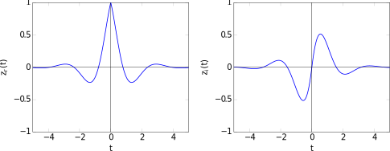
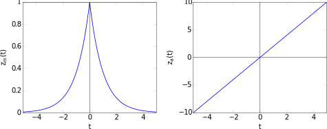

Appendix A — Prerequisite Review
This course uses many concepts from prerequisite courses, particularly those from calculus, differential equations, and circuits. While we assume you know this material, the following sections offer a review of the most pertinent and establish some notation. If you have trouble with any of them seek assistance – the sooner the better.
A.1 Complex Numbers
Complex numbers are used extensively throughout the course. You need to be very adept at manipulating them.
The Number System
By way of review and to motivate the discussion of complex numbers, recall the following basic facts.
The Natural Numbers \(\mathbb{N}\) are the positive integers \(1,2,3,4,\cdots\). Given two natural numbers \(a\) and \(b\) the sum \(a+b\) and the product \(a\,b\) are also natural numbers, that is the set of natural numbers is closed under addition and multiplication.
Solving equations of the form \(x + a = b\) for any natural numbers \(a,b\) requires the introduction of the negative integers \(\cdots, -4, -3, -2 -1\) and \(0\). These plus the natural numbers give the integers \(\mathbb{Z}\). Note \(\mathbb{N} \subset \mathbb{Z}\). Zero (\(0\)) is called the identity element with respect to addition, while \(1\) is the identity with respect to multiplication, that is \(a+0 = a\) and $ a = a$. The inverse of an integer \(a\) is \(-a\), such that their sum gives the identity for addition, i.e. \(a + -a = 0\).
The rational numbers \(\mathbb{Q}\) are of the form \(\frac{b}{a}\) for integers \(a,b\) with \(a \neq 0\). They solve problems of the form \(ax=b\) and provide the inverse for multiplication since \(\frac{1}{a} \cdot a = 1\). Note \(\mathbb{Z} \subset \mathbb{Q}\)
The irrational numbers are those that cannot be written as a rational number, for example \(\sqrt{2} = 1.414\ldots\) and \(\pi = 3.14159\ldots\)
The union of the rational and irrational numbers give the real numbers denoted \(\mathbb{R}\). We will often work with the extended real numbers, the real numbers union \(\pm\infty\).
Graphically, the numbers and their ordering can be expressed using the number line:
Complex numbers as extension of reals
Continuing the pattern of the basic number system we can ask what are solutions of equations of the form \(x^2+a = 0\) or \(x^2 + 2ax +a^2 + b^2 = 0\) for \(a,b \in \mathbb{R}\) ? As above, finding such solutions requires moving to a larger set of numbers, the _complex numbers+ denoted by \(\mathbb{C}\).
A complex variable \(z\in\mathbb{C}\) can be written as \(z = a + j\, b\) for \(a,b\in\mathbb{R}\), where \(j\) is the imaginary unit and \(j^2 = -1\). Note in mathematics the imaginary unit is denoted \(i\); this difference is purely historical. Some basic definitions:
- the real part \(\Re(z) = \text{Re}(z) = a\)
- the imaginary part \(\Im(z) = \text{Im}(z) = b\)
- two complex numbers \(z_1, z_2\in \mathbb{C}\) are equal if \(\text{Re}(z_1) = \text{Re}(z_2)\) and \(\text{Im}(z_1) = \text{Im}(z_2)\)
- \(\mathbb{R} \subset \mathbb{C}\), when \(b = 0\) and we say that the number is purely real
- if \(a = 0\) we say the number is purely imaginary
- the complex conjugate of \(z = a + jb\) is \(z^* = a - jb\).
Operations on complex numbers
Arithmetic operations on complex numbers are defined using the algebra of real numbers, replacing \(j^2 = -1\). Given complex numbers \(a + j\, b\) and \(c + j\, d\)
- addition: \((a + jb) + (c +jd) = (a+c) + j(b+d)\)
- subtraction: \((a + jb) - (c +jd) = (a-c) + j(b-d)\)
- multiplication: \((a + jb)\cdot(c +jd) = ac + jbc + jad + j^2 bd = (ac-bd) + j(bc+ad)\)
- division: \(\frac{(a + jb)}{(c +jd)} = \frac{ac+jbc-jad-j^2 bd}{c^2 -j^2 d^2} = \frac{(ac+bd) + j(bc-ad)}{c^2 + d^2} = \frac{ac+bd}{c^2 + d^2} + j \frac{bc-ad}{c^2 + d^2}\)
Basic properties of complex numbers
Let \(z_1, z_2, z_3 \in \mathbb{C}\), then:
- closure property: \(z_1 + z_2 \in \mathbb{C}\) and \(z_1 \cdot z_2 \in \mathbb{C}\)
- commutative property: \(z_1 + z_2 = z_2 + z_1\) and \(z_1 \cdot z_2 = z_2 \cdot z_1\)
- associative property: \(z_1 + (z_2 + z_3) = (z_1 + z_2) + z_3\) and \(z_1 \cdot (z_2 \cdot z_3) = (z_1 \cdot z_2) \cdot z_3\)
- identity elements: \(0 = (0 + j0) \in \mathbb{C}\) is the identity element for addition since \(z_1 + 0 = z_1\) and \(1 = 1 + j0 \in \mathbb{C}\) is the identity element for multiplication since \(z_1\cdot 1 = z_1\)
- inverse elements: for any \(z_1\) there exists an inverse \(z_2 = -z_1\) such that \(z_1 + z_2 = 0\), and for any \(z_1 \neq 0\) there exists an inverse \(z_2 = z_1^{-1} = \tfrac{1}{z_1}\) such that \(z_1 \cdot z_2 = 1\)
Absolute Value (Magnitude) of complex numbers
The absolute value or of a complex number \(z = a + jb\) is denoted \(|z| = |a+jb|\) and is given by \[ |a + jb| = \sqrt{a^2 + b^2} \] For complex numbers \(z_1, z_2, \ldots, z_n\), the following useful properties hold
- \(|z_1\cdot z_2 \cdots z_N| = |z_1|\cdot |z_2|\cdots|z_N|\)
- \(\left| \frac{z_1}{z_2}\right| = \frac{|z_1|}{|z_2|}\) for \(z_2 \neq 0\)
Argument (Phase Angle) of complex numbers
The argument or of a complex number \(z = a + jb\) is denoted \(\angle z = \angle(a+jb)\) and is given by \[ \angle(a + jb) = \arctan\frac{b}{a} \] Take care when computing this number on your calculator (or in a programming language) so that it produces an angle in radians and in the correct quadrant. For example \(\angle(-1-j1) = \arctan\frac{-1}{-1} = \frac{5\pi}{4} = -\frac{3\pi}{4}\) is different from \(\angle(-1-j1) = \arctan\frac{-1}{-1} = \arctan\frac{1}{1} = \frac{\pi}{4}\), the later being incorrect.
For complex numbers \(z_1, z_2, \ldots, z_n\), the following useful properties hold
- \(\angle \left(z_1\cdot z_2 \cdots z_N\right) = \angle z_1 + \angle z_2 + \cdots + \angle z_N\)
- \(\angle z_i^{-1} = -\angle z_i\)
Cartesian and Polar representation of complex numbers
A complex number \(z\) can be represented in Cartesian form as a pair of numbers in the , \((\Re{z},\Im{z})\). The same \(z\) can be represented in polar form as \(z = |z|\cdot e^{j\angle z}\). We can convert between the representations using \(\Re{z} = |z| \cos(\angle z)\) and \(\Im{z} = |z| \sin(\angle z)\). The following relations hold
- Multiplication by \(j\) is equivalent to rotation by \(\tfrac{\pi}{2}\) \[ j\cdot z = e^{j\tfrac{\pi}{2}}\cdot |z|\cdot e^{j\angle z} = |z|\cdot e^{j(\angle z + \tfrac{\pi}{2})} \]
- Division by \(j\) is equivalent to rotation by \(- \tfrac{\pi}{2}\) \[ \frac{1}{j}\cdot z = e^{-j\tfrac{\pi}{2}}\cdot |z|\cdot e^{j\angle z} = |z|\cdot e^{j(\angle z - \tfrac{\pi}{2})} \]
A related expression that will be very useful to us is Eulers formula: \(e^{j\theta} = \cos(\theta) + j\sin(\theta)\). From this we can derive the relations: \[ \cos(\theta) = \frac{1}{2} e^{j\theta} + \frac{1}{2} e^{-j\theta} \] \[ \sin(\theta) = \frac{1}{2j} e^{j\theta} - \frac{1}{2j} e^{-j\theta} \]
These representations and relations can be visualized as follows
Complex numbers as roots of polynomial equations
Recall our original motivation for complex numbers, as solutions to polynomials. Consider the \(N^\text{th}\) order polynomial \[ z^N + a_N z^{N-1} + \cdots + a_2 z + a_1 \] where in cases of interest to us in this course the \(N\) coefficients \(a_{N}, \cdots, a_1\) are real. In such cases the polynomial can be factored into \[ z^N + a_{N} z^{N-1} + \cdots + a_2 z + a_1 = (z-z_1)\cdot(z-z_2)\cdots(z-z_N) \] where the \(z_i\) are the \(N\) of the polynomial. These are complex numbers in general with two cases:
- the root is real
- the root is complex or purely imaginary, in which case they come in conjugate pairs
Note: the roots function in Matlab or Octave can be used to find the roots of any order polynomial given a vector of coefficients.
A.2 Functions
As we will see in the first few lectures, signals are modeled as functions. Recall a function is a mapping between sets \[ f: A \rightarrow B \] where \(A\) is a set called the domain and \(B\) is a set called the co-domain. In this course we are primarily concerned with four kinds of functions
- the real-valued functions of an integer variable \(f:\mathbb{Z}\mapsto\mathbb{R}\)
- the complex-valued functions of an integer variable \(f:\mathbb{Z}\mapsto\mathbb{C}\)
- the real-valued functions of a real variable \(f:\mathbb{R}\mapsto\mathbb{R}\)
- the complex-valued functions of a real variable \(f:\mathbb{R}\mapsto\mathbb{C}\)
We will also briefly discuss the the complex-valued functions of a complex variable \(f:\mathbb{C}\mapsto\mathbb{C}\).
Functions can be defined using an expression operating on the independent variable representing a value from the domain. For example a function \(f:\mathbb{R}\mapsto\mathbb{R}\) might be defined by the expression \[ f(t) = 2t^2 \] where \(t\in\mathbb{R}\) is the independent variable. Common operations are sums, difference, products, quotients, powers, and application of trigonometric and transcendental functions. Functions with different expressions for different intervals of the domain are called piecewise. For example \[ f(t) = \left\{ \begin{array}{cc} e^{t} & t < 0\\ e^{-t} & t \geq 0 \end{array} \right. \]
Functions can also be defined using composition. Given two functions \(f:\mathbb{R}\mapsto\mathbb{R}\) and \(g:\mathbb{R}\mapsto\mathbb{R}\) we can define a new function \[ (f \circ g)(t) = f(g(t)) \] where we first apply \(g\) then use it’s value as the input to \(f\). This will be used to define several transformations of signals.
Visualizing Functions
You are certainly familiar with the graph of functions \(f:\mathbb{R}\mapsto\mathbb{R}\). To graph a complex-valued function of a single variable we need to plot two functions. Consider a function \(z(t) \in \mathbb{C}\) for \(t \in \mathbb{R}\) expressed in Cartesian form: \[ z(t) = z_r(t) + j z_i(t) \] where \(z_r(t) = \Re(z(t))\) and \(z_r(t) = \Im(z(t))\) are the real and imaginary parts of the complex value at a given \(t\). We can plot these two real-valued functions to visualize the complex function. Similarly consider a function \(z(t) \in \mathbb{C}\) for \(t \in \mathbb{R}\) expressed in polar form: \[ z(t) = z_m(t) e^{jz_a(t)} \] where \(z_m(t) = |z(t)|\) and \(z_a(t) = \angle z(t)\) are the magnitude and angle of the complex value at a given \(t\). We can plot these two real-valued functions to visualize the complex function.
Another approach to visualizing a complex number is to plot it as the tip of a vector that moves as a function of the independent variable.
Example
We can then visualize the function as plots of the real and imaginary functions,

or the magnitude and angle functions,

A.3 Algebra
There is a fair amount of algebra involved in the manipulation of expressions in this course. Beyond the standard items there are a few techniques you might have missed or don’t remember that come in handy.
Solving a simple system of trigonometric equations
Consider the system of equations \[\begin{aligned} x \cos(y) &= A\\ x \cos(B + y) &= C \end{aligned}\]for constants \(A,B,C \in \mathbb{R}\) and variables \(x,y\in\mathbb{R}\). How do you solve this for \(x,y\)?
First expand the second equation using the trigonometric identity for the cosine of addition of two angles:
\[ x \cos(B + y) = x \cos(B)\cos(y) - x \sin(B)\sin(y) = C \] Then divide the first equation above by the previous: \[ \frac{x \cos(B)\cos(y) - x \sin(B)\sin(y)}{x \cos(y)} = \frac{C}{A} \] which simplifies to \[ \cos(B) - \sin(B)\frac{\sin(y)}{\cos(y)} = \frac{C}{A} \] Recognizing the tangent is sin/cos we can solve for \(y\): \[ y = \arctan\left(\frac{\frac{C}{A}-\cos(B)}{-\sin(B)}\right) \] Then we can substitute back to get \(x\): \[ x = \frac{A}{\cos(y)} \]
A.4 Calculus
Calculus is used heavily in the course. Here we remind ourselves of some basic facts. Consult your calculus text for more details.
Limits
The limit \(L\) of a function \(f(t)\) is the function value as the independent variable approaches a constant \(t\rightarrow c\), written as \[ \lim_{t\rightarrow c} f(t) = L \] The one-sided limit is defined as the limit as the independent variable approaches the constant from below or above \[ \lim_{t\rightarrow c^-} f(t) = L \mbox{ (limit from below) or } \lim_{t\rightarrow c^+} f(t) = L \mbox{ (limit from above)} \]
Derivatives of real-valued functions
For functions \(f:\mathbb{R}\mapsto\mathbb{R}\) recall the derivative is the instantaneous rate of change in the value as a function of the independent variable, and can be defined using a limit of a difference. Consider such a function \(f(t)\) for \(t\in\mathbb{R}\), it’s derivative is given using a limit of a forward difference:
\[ \frac{df}{dt} (t) = \lim_{h\rightarrow0^+} \frac{f(t+h)-f(t)}{h} \]
Higher-order derivative are defined recursively. For example, the second derivative is
\[ \frac{d^2f}{dt^2} (t) = \lim_{h\rightarrow0^+} \frac{\frac{df}{dt}(t+h)-\frac{df}{dt}(t)}{h} \] In the general case the \(N^\text{th}\) order derivative is \[ \frac{d^Nf}{dt^N} (t) = \lim_{h\rightarrow0^+} \frac{\frac{d^{N-1}f}{dt^{N-1}}(t+h)-\frac{d^{N-1}f}{dt^{N-1}}(t)}{h} \]
Note there are several different notations for derivatives, e.g. \(\frac{df}{dt}(t) = f^\prime (t) = \dot{f}(t)\), but we will use the former (Leibniz) in most cases despite its abuse of notation. We will also use the derivative operator notation \(\frac{d^Nf}{dt^N} = (D^N f)(t)\), which is convenient for higher-order derivatives.
A function with finite derivatives (in the limit) for all values of the independent variable over an interval is called continuous over that interval. Values of the independent variable where the derivative is not finite (in the limit) are called discontinuities. A function with a finite number of discontinuities is called piecewise continuous. If the limit is one-sided then we say the function is piecewise continuous from the left or right (or from below/above).
Integrals of real-valued functions
The indefinite integral \(F(t)\) is the anti-derivative of a function \(f(t)\) if \(\frac{dF}{dt}(t) = f(t)\) up to a constant term, written as \[ F(t) + C = \int f(t)\; dt \] where \(C\) is an arbitrary constant.
The definite integral is the area under a function between the lower limit \(a\) and the upper limit \(b\), defined as \[ \int\limits_{a}^{b} f(t) \; dt = F(b) - F(a) \] In cases where one or both of the limits is infinite, the definition changes to use limits \[ \int\limits_{-\infty}^{b} f(t) \; dt = F(b) - \lim_{a\rightarrow -\infty} F(a) \] \[ \int\limits_{a}^{\infty} f(t) \; dt = \lim_{b\rightarrow \infty} F(b) - F(a) \] \[ \int\limits_{-\infty}^{\infty} f(t) \; dt = \lim_{b\rightarrow \infty} F(b) - \lim_{a\rightarrow -\infty} F(a) \]
A.5 Differential Equations
This course assumes a background in basic differential equations (e.g. as taught in Math 2214). However, we only consider linear, constant-coefficient differential equations.
A linear, constant coefficient (LCC) differential equation is of the form \[ a_0\, y + a_1\, \frac{dy}{dt} + a_2\, \frac{d^2y}{dt^2} + \cdots + a_N\, \frac{d^Ny}{dt^N} = b_0\, x + b_1\, \frac{dx}{dt} + b_2\, \frac{d^2x}{dt^2} + \cdots + b_M\, \frac{d^My}{dt^M} \] which can be written compactly as \[ \sum\limits_{k = 0}^{N} a_k\, \frac{d^ky}{dt^k} = \sum\limits_{k = 0}^{M} b_k\, \frac{d^kx}{dt^k} \]
It is helpful to clean up this notation using the derivative operator \(D^n = \frac{d^n}{dt^n}\). For example \(D^2y = \frac{d^2y}{dt^2}\) and \(D^0 y= y\). To gives the form: \[ \sum\limits_{k = 0}^{N} a_k\, D^k y = \sum\limits_{k = 0}^{M} b_k\, D^k x \]
We can factor out the derivative operators \[ a_0y + a_1Dy + a_2D^2y + \cdots + a_ND^Ny = b_0\, x + b_1\, Dx + b_2\, D^2x + \cdots + b_M\, D^M x \] \[ \underbrace{\left(a_0 + a_1D + a_2D^2 + \cdots + a_ND^N\right)}_{\text{Polynomial in } D, Q(D)} y = \underbrace{\left(b_0 + b_1 D + b_2 D^2 + \cdots + b_M D^M\right)}_{\text{Polynomial in } D, P(D)} x \] to give:
\[ Q(D)y = P(D)x \]
You learned how to solve these in differential equations as
\[ y(t) = y_\text{h}(t) + y_\text{p}(t) \]
The term \(y_\text{h}(t)\) is the solution of the homogeneous equation \[ Q(D)y = 0 \] Given the \(N-1\) auxiliary conditions \(y(t_0) = y_0\), \(Dy(t_0) = y_1\), \(D^2y(t_0) = y_2\), up to \(D^{N-1}y(t_0) = y_{N-1}\).
The term \(y_\text{p}(t)\) is the solution of the particular equation \[ Q(D)y = P(D)x \] for a given \(x(t)\).
Rather than recapitulate the solution to \(y_\text{h}(t)\) and \(y_\text{p}(t)\) in the general case, we focus on the homogeneous solution \(y_\text{h}(t)\) only. The reason is that we will use the homogeneous solution to find the impulse response and take a different approach to solving the general case for an arbitrary input using the impulse response and convolution (see chapters 4 and 8).
To solve the homogeneous system:
Step 1: Find the by replacing the derivative operators by powers of an arbitrary complex variable \(s\). \[ Q(D) = a_0 + a_1D + a_2D^2 + \cdots + a_ND^N \] becomes \[ Q(s) = a_0 + a_1s + a_2s^2 + \cdots + a_Ns^N \] a polynomial in \(s\) with \(N\) roots \(s_i\) for \(i = 1, 2, \cdots, N\) such that \[ (s - s_1)(s-s_2)\cdots(s-s_N) = 0 \]
Step 2: Select the form of the solution, a sum of terms corresponding to the roots of the characteristic equation.
- For a real root \(s_1\in \mathbb{R}\) the term is of the form \[ C_1 e^{s_1 t}. \]
- For a pair of complex roots (they will always be in pairs) \(s_{1,2} = a \pm jb\) the term is of the form \[ C_1 e^{s_1 t} + C_2 e^{s_2 t} = e^{a t}\left(C_3\cos(bt) + C_4\sin(bt)\right) = C_5 e^{a t}\cos(bt + C_6). \]
- For a repeated root \(s_1\), repeated \(r\) times, the term is of the form \[ e^{s_1 t} (C_0 + C_1 t + \cdots + C_{r-1} t^{r-1}). \]
Step 3: Solve for the unknown constants in the solution using the auxiliary conditions.
We now examine two common special cases, when \(N=1\) (first-order) and when \(N=2\) (second-order).
First-Order Homogeneous LCCDE
Consider the first order homogeneous differential equation \[ \frac{dy}{dt}(t) + ay(t) = 0 \mbox{ for } a \in \mathbb{R} \] The characteristic equation is given by \[ s + a = 0 \] which has a single root \(s_1 = -a\). The solution is of the form \[ y(t) = Ce^{s_1 t} = Ce^{-a t} \] where the constant \(C\) is found using the auxiliary condition \(y(t_0) = y_0\).
Example
Consider the homogeneous equation \[ \frac{dy}{dt}(t) + 3y(t) = 0 \mbox{ where } y(0) = 10 \] The solution is \[ y(t) = Ce^{-3 t} \] To find \(C\) we use the auxiliary condition \[ y(0) = Ce^{-3 \cdot 0} = C = 10 \] and the final solution is \[ y(t) = 10e^{-3 t} \]
Second-Order Homogeneous LCCDE
Consider the second-order homogeneous differential equation \[ \frac{d^2y}{dt^2}(t) + a\frac{dy}{dt}(t) + by(t) = 0 \mbox{ for } a,b \in \mathbb{R} \] The characteristic equation is given by \[ s^2 + as + b = 0 \]
Let’s look at several examples to illustrate the functional forms.
Example
\[ \frac{d^2y}{dt^2}(t) + 7\frac{dy}{dt}(t) + 10y(t) = 0 \] The characteristic equation is given by \[ s^2 + 7s + 10 = 0 \] which has roots \(s_1 = -2\) and \(s_2 = -5\). Thus the form of the solution is \[ y(t) = C_1e^{-2t} + C_2e^{-5t} \]
Example
\[ \frac{d^2y}{dt^2}(t) + 2\frac{dy}{dt}(t) + 5y(t) = 0 \] The characteristic equation is given by \[ s^2 + 2s + 5 = 0 \] which has complex roots \(s_1 = -1+j2\) and \(s_1 = -1-j2\). Thus the form of the solution is \[ y(t) = e^{-t}\left(C_1\cos(2t) + C_2\sin(2t)\right) \]
Example
\[ \frac{d^2y}{dt^2}(t) + 2\frac{dy}{dt}(t) + y(t) = 0 \] The characteristic equation is given by \[ s^2 + 2s + 1 = 0 \] which has a root \(s_1 = -1\) repeated \(r=2\) times. Thus the form of the solution is \[ y(t) = e^{-t}\left(C_1 + C_2t\right) \]
In each of the above examples the constants, \(C_1\) and \(C_2\), are found using the auxiliary conditions \(y(t_0)\) and \(y\prime(t_0)\).
A.6 Circuits
ECE 2024 is required for knowledge of continuous signals representation as voltages and currents, and the analysis and construction of circuits containing resistors, capacitors, inductors, and operational amplifiers. We will assume you can derive the differential governing equation for simple circuits using the voltage and current relationships for the circuit elements and Kerchoffs laws.
Resistor: \(v_R = R \,i_R\)
Voltage-current relationship for resistor. Capacitor: \(i_C = C\, v_C^\prime\)
Voltage-current relationship for capacitor. Inductor: \(v_L = L\, i_L^\prime\)
Voltage-current relationship for inductor. Ideal Op-Amp: the ideal op-amp operates so as to keep \(i_+ = i_- = 0\) and \(v_- = v_+\).

Voltage-current relationships for ideal op-amp.
These elements are the building blocks of most continuous-time signal processing implementations.
KVL
Kerchoff’s Voltage Law (KVL) says that the sum of the voltages around any closed loop must be zero.
KCL
Kerchoff’s Current Law (KCL) says that the sum of the currents into a node must be zero.
Ideal OpAmps
An op-amp is a device that has two inputs, labeled the inverting (\(-\)) and non-inverting (\(+\)) input respectively, and a single output. The ideal op-amp is an approximation to simplify analysis. This approximation assumes:
- the inputs have an infinite impedance such that no current flows into the inputs, \(i_+ = i_- = 0\)
- the op-amp operates such that the input voltages are made equal \(v_- = v_+\)
- the output can source as much current as needed
While this is just an approximation, within the frequency regimes we are concerned with in this course, it works well.
Governing Equations
Given the component descriptions above and Kerchoff’s laws with some algebra and calculus we can derive the input output equation for a wide variety circuits, including those with op-amps. When the circuit contains \(N\) energy storage elements (inductors or capacitors) the resulting equation will be an \(N^\text{th}\) order linear, constant-coefficient differential equation. Note, the cleanest route to the governing equation is not always clear at the start and it takes some trial and error on your part.
Example
Consider the following RC circuit where \(v(t)\) is the time-varying source voltage and we wish to know the resulting voltage across the capacitor \(v_C(t)\).
We can analyze it using either a KVL or a KCL. Using a KVL we note \[ v(t) = R\,i(t) + v_c(t) \] and note that the current through the resistor and capacitor is the same. We use the voltage-current relationship for the capacitor to obtain \[ i(t) = C\,\frac{dv_c}{dt}\; . \] Substituting into the KVL we get \[ v(t) = RC\,\frac{dv_c}{dt} + v_c(t) \] which we can rearrange into the standard form for a differential equation \[ \frac{dv_c}{dt} + \frac{1}{RC}v_c(t) = \frac{1}{RC}\,v(t) \] Alternatively we could have used a KCL at the top of the capacitor \[ i(t) = C\frac{dv_C(t)}{dt} \] The current through the resistor using Ohm’s law is \[ i(t) = \frac{v(t) - v_C(t)}{R} \] Equating the two expressions and putting into standard form we get the same governing equation as before.
Example
We can take the previous circuit and connect to an op-amp in the voltage follower form to arrive at a circuit that isolates the circuit from other parts of a larger circuit. This strategy, where we form these stages will be used throughout the course.
The analysis proceeds very similar to the previous one. Using the ideal op-amp conditions, a KCL at the non-inverting input gives \[ i(t) = C\frac{dv_C(t)}{dt} + 0 \] and \[ y(t) = v_c(t) \] Again, the current through the resistor using Ohm’s law is \[ i(t) = \frac{v(t) - v_C(t)}{R} \] Equating the two expressions, substituting \(v_C(t) \rightarrow y(t)\), and putting into standard form we get \[ \frac{dy}{dt}(t) + \frac{1}{RC}y(t) = \frac{1}{RC}\,v(t) \]
Building and Characterizing Circuits
We will be building and characterizing physical circuits to better connect the course to the real world. We assume you know how to build relatively simple circuits on a protoboard, as well as use a power supply, function generator and oscilloscope (i.e. the Digilent Analog Discovery). We also assume you have taken or are currently taking the embedded course, so that toward the end of the semester you know how to interface and program with the TI MSP432 “Red Board” (MSP-EXP432P401R Evaluation board) or similar MCU.
A.7 Programming
ECE 2514 is required for the ability to model and simulate physical systems using computational tools, and basic programming ability.
- Matlab for general computation and plotting
- C++ (a small subset) for implementing digital filters
For general computation we don’t require Matlab and Mathematica, Python, or Julia work as well. Matlab is required for access to filter design functionality using the signal processing toolbox, although Python with the SciPy.signal library provides similar functionality.
Plotting and Visualization
We assume you can plot real and complex functions using Matlab/Python/Julia/Mathematica, label axes appropriately, and generate readable graphics for inclusion in problem set solutions and the project report.
A.8 Digital Systems
ECE 2544 is required for for knowledge of digital signal representation and the analysis and construction of circuits containing combinatorial and sequential logic.
Binary Representation of Integers vs Floating Point
TODO
shift registers
TODO
adders and multipliers
TODO